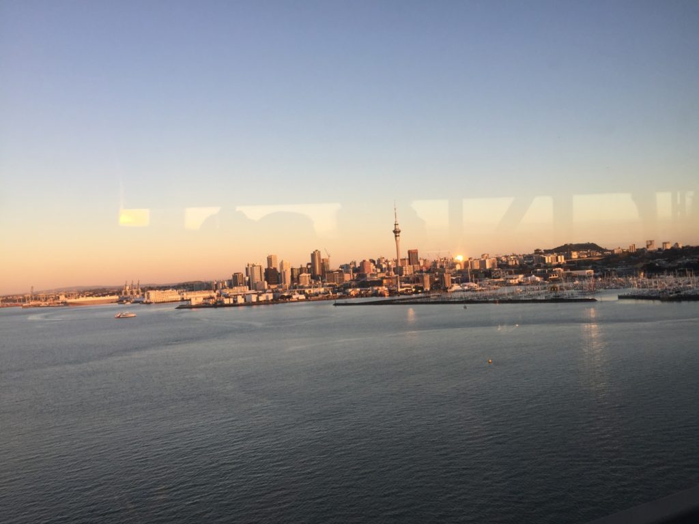
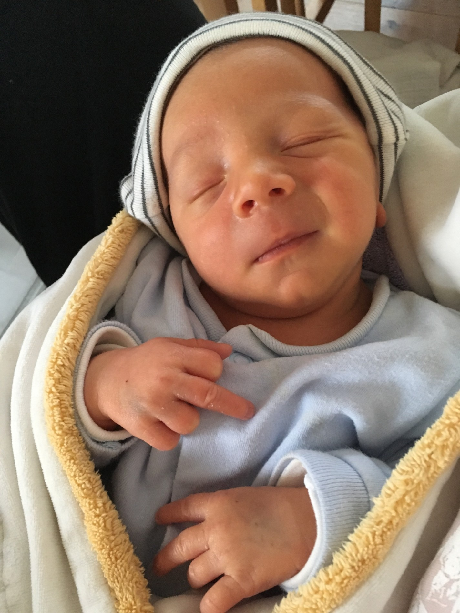
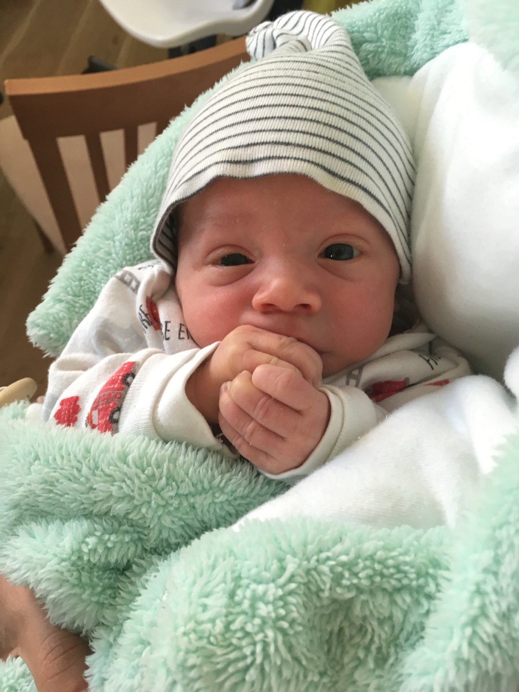

Byla dlouh치 pomlka, j치 v칤m a omlouv치m se. Za to m치m pro v치s 쬳av칠 novinky ze sv캩ta pokojsk칳ch. Op캩t mus칤m upozornit, 쬰 pokud si chcete ponechat alespo켿 zbytek vzpom칤nek na princeznovskou Lenu, tenhle p콏칤sp캩vek p콏esko캜te.
Posledn칤 dva t칳dny jsem d콏ela jak mezek. Projevuje se to tak, 쬰 i kdy denn캩 poz콏u asi tak p콢l kila 캜okol치dy, tak ztr치c칤m na v치ze…ano, takovej j치 m치m te캞 v칳dej 游
S blechama to taky pokro캜ilo. Ve chv칤li, kdy jsem byla pokousan치 hodn캩 velk칳m stylem na krku jsem to cht캩la zabalit na m칤st캩 a prost캩 u do t칠 pr치ce nej칤t. Jsem ale bojovn칤k, tak쬰 jsem si v코echny svoje v캩ci v 코atn캩 zabalila do igelitek a v pr치ci jsem si ka쬯칳 den myla hlavu, abych si n치hodou n캩jakou tu malou ludru nedonesla dom콢. Tenhle t칳den jsem v코ak do코la k velk칠mu zji코t캩n칤. Blechy jsou i na pokoj칤ch pro hosty. V p캩tihv캩zdi캜kov칳m hotelu uprost콏ed Aucklandu m콢쬰te chytit blechy 游 A za st칤쬹ost, 쬰 jste byli pokous치ni dostanete cel칳ch 37 dolar콢 slevu 游 Je to absolutn캩 neuv캩콏iteln칳, ale je to tak.
Dal코칤 zji코t캩n칤 je, 쬰 pokud v치s budou blechy kousat dostate캜n캩 dlouho, t캩lo si proti tomu dok치쬰 vytvo콏it imunitu. 맚칤pance se hoj칤 mnohem rychleji a nakonec o nich skoro nev칤te. Proto asi bez캞치k콢m u n치s (v 캛R) ty blechy nevad칤, u s nimi 쬴j칤 v harmonii 游 Dal코칤 v캩c je, 쬰 od m칠ho po코t칤p치n칤 na krku m캩 nic dal코칤ho nekouslo. Mo쬹치 maj칤 blechy n캩jakou hierarchii jako slepice, tak쬰 pokud m캩 te캞 코콘칤pla n캩jak치 alfa blecha, u jsem ocejchovan치 a 쮂멳n치 oby캜 blecha u si na m캩 nedovol칤. To je moje teorie 游
V캜era jsem za코la za jedn칤m ze 코칠f칤k콢, abych mu osv캩tlila, co v코echno jim tam nefunguje. Sama jsem se pobavovala nad t칤m, 쬰 jdu do kancel치콏칤 mezi v코echny ty krava콘치ky p캩kn캩 ve sv칠 ukl칤zec칤 uniform캩 a s hadrou nacpanou z boku za tou moj칤 b칤lou z치st캩rou. 먞뼍칤k je sympa콘치k a mimo jin칠 jsem se dozv캩d캩la, 쬰 je z Jihoafrick칠 Republiky, cel치 jeho rodina 쬴je v Rakousku a m치 r치d 캛esk칳 Krumlov 游
Jo a je코t캩 k n캩캜emu se mus칤m p콏iznat, stal se ze m캩 hroznej doj칤쬯캩캜 z치kusk콢. Ka쬯ej druhej host n캩co slav칤, tak쬰 v캩t코inou nach치z칤m v pokoj칤ch tal칤콏e se z치kusky s n치pisem 코콘astn칠 narozeniny, 코콘astn칠 v칳ro캜칤, 코콘astn칠 l칤banky a kdy tam zbyde i n캩jakej ten z치kusek, tak jsem 코콘astn치 i j치. Ze za캜치tku jsem se trochu ost칳chala a p콏i코lo mi to trochu ekl, ale v캩t코inou je to tak p캩t mal칳ch z치kusk콢 a jeden a dva z콢st치vaj칤 netknut칳. A to je ta chv칤le, kdy p콏ijdu j치 a v코echno si to narvu do hlavy 游 Dva dny zp캩t jsem m캩la nejlep코칤 meru켿kovou makronku, co jsem kdy jedla. P치n, co slavil narozeniny ud캩lal podle m캩 velkou chybu, 쬰 ji nesn캩dl 游
A nesm칤m zapomenout na speci치ln칤 odstavec pro Kubu. U jsem p콏i코la na to, pro캜 m치 ka쬯칳 host k dispozici papu캜e. Nen칤 to proto, aby mu bylo fajn teplo na no쬶y, ale proto, 쬰 se v koupeln캩 nikdy nevyt칤raj칤 podlahy. Nen칤 to t칤m, 쬰 by ukl칤ze캜ky byly l칤n칳 a nevyt칤raly je. Nemaj칤 to v콢bec v popisu pr치ce 游 nemaj칤 na to 쮂멳n칳 vybaven칤, nic. Koupelny se jen vys치vaj칤, ale nevyt칤raj칤. Tak쬰 a p콏칤코t캩 p콢jdete na hotelu bosky 캜콢rat a budou se v치m lepit no쬶y k podlaze, s nejv캩t코칤 pravd캩podobnost칤 je to 코patn캩 m칤콏en칳 proud n캩jak칠ho 캛칤켿ana, co tam bydlel p콏ed v치ma 游
Kdy jsem se po m캩s칤ci hled치n칤 pozice kontraktora (v칤c pen캩z ne zam캩stnanec) nedostal ani k jednomu pohovoru, usoudili jsme, 쬰 by to cht캩lo zm캩nit strategii. Za캜al jsem teda ps치t i na inzer치ty hledaj칤c칤 zam캩stnance na full-time na dobu neur캜itou. No a hned v prvn칤 vln캩 p콏ihl치코ek se zada콏ilo 游뗵
Po m캩s칤ci sezen칤 doma na zadku jsem si 콏ekl, 쬰 zv치쮂셠 jakoukoliv pr치ci v oboru. 콯e nebudu hledat v칳hradn캩 pozici Java Developera. A proto jsem se vydal na North Shore (15km z centra Aucklandu, 1hod mhd) na pohovor ke Chrisovi do firmy Bosun Technologies na pozici Full Stack Developera. Jeliko maj칤 pouze mal칳 kancl칤k uvnit콏 veterin치rn칤 kliniky, se코li jsme se ve vedlej코칤 kav치rn캩. Chris mi vypr치v캩l co d캩l치 jeho firma, j치 jsem mu zase 콏ekl n캩co o sob캩 a sv칳ch zku코enostech. Klasick칠 prvn칤 kolo pohovor콢. To bylo ve 캜tvrtek.
Je코t캩 ten ve캜er mi zavolal, jestli bychom se n치sleduj칤c칤 den dopoledne mohli potkat v centru na druh칠 kolo pohovoru, kde bychom 코li v칤ce do hloubky m칳ch technick칳ch znalost칤. Je to dobr칳, 콏ikal jsem si. Mam 코anci 游뗵
N치sleduj칤c칤 den jsem obl칠kl dal코칤 z nov캩 nakoupen칳ch ko코il speci치ln캩 za 칰캜elem vypadat profi na pohovorech a vyrazil. 콎e코ili jsme spolu jak funguj칤 internety, trochu s칤t칤, javascript콢, web콢 a v콢bec v코eho okolo. Bylo mi jasn칳, 쬰 v p콏칤pad캩 칰sp캩chu bude moj칤 pracovn칤 n치pln칤 v코echno jenom ne Java. Ale to nevad칤. Tak jako tak se budu hodn캩 u캜it. Jedna jeho speci치ln칤 ot치zka nebo sp칤코e mal칳 r칠bus mi utkv캩l v pam캩ti. M콢쬰te si sami zkusit, jestli byste na to p콏i코li:
M치te v치hu, kterou m콢쬰te jednou pou쮂셦. M치te 5 sklenic. V ka쬯칠 sklenici je 10 fazol칤. Jedna ze sklenic obsahuje fazole, kde fazole v치쮂 9 gram콢. V코echny ostatn칤 sklenice maj칤 fazole v치쮂셖칤 10 gram콢. Jak t칤m jedn칤m v치쬰n칤m zj칤st칤te, kter치 z t캩ch p캩ti sklenic obsahuje leh캜칤 fazole?
M치 se tim zjistit, jak 캜lov캩k p콏em칳코l칤. A jak funguje ve stresu – Kdy p콏ede m캩 polo쬴l telefon s b캩쮂셖칤m odpo캜tem na 2 minuty. Ka쬯op치dn캩 na 콏e코en칤 h치danky jsem p콏i코el a m캩l jsem z toho potom velkou radost 游뗵
V pond캩l칤 r치no m캩 Chris vzbudil telefon치tem, kdy mi ozn치mil, jestli mam opravdu o nab칤zenou pozici z치jem. 콯e on m치 z치jem o m캩 游뗵 A tak jsem jel hned dal코칤 den podepsat smlouvu.
콯e pr칳 se mu na vypsanou pozici p콏ihl치silo 112 쬴votopis콢. Z nich vybral 12 lid칤, se kter칳mi se se코el osobn캩. No a nakonec jsem dostal p콏ednost p콏ed jin칳m uchaze캜em, kter칳 m캩l sice v칤ce zku코enost칤 na pap칤콏e, ale m캩l men코칤 „drive“ ne j치. A콘 u to znamen치 cokoliv 游뗵
Chris m캩 nabral na seniorn칤 pozici. Akor치t se teda podle pohovoru nev칤, jestli jsem opravdu senior nebo ne. Tak쬰 m치m ve smlouv캩 „Intermediate Full Stack Developer“ s t칤m, 쬰 se b캩hem zku코ebn칤 doby t콏칤 m캩s칤c콢 uvid칤, jak n치m vyhovuje na코e spolupr치ce. A pokud pude v코echno podle pl치nu a j치 se osv캩d캜im, dostanu novou pracovn칤 nab칤dku u s pozic칤 seniora a zhruba 15% p콏id치n칤m na v칳plat캩.
V nov칠 pr치ci mam za sebou dva t칳dny. Tak je코t캩 trochu k samotn칠 pracovn칤 n치plni. Bude to trochu v칤ce technick칠, tak쬰 tomu te캞 mami asi nebude코 upln캩 rozum캩t 游뗵 Firma Bosun Technologies m치 na starosti n캩kolik projekt콢 a jedn칤m z nich je i syst칠m objedn치vek a vlastn캩 takov칳 eshop pro veterin치rn칤 kliniku (proto maj칤 sv콢j kancl칤k p콏칤mo tam). Na frontendu bootstrap 코ablona s jquery. Na backendu c# b캩쮂셖칤 v mono na ubuntu. V칳voj na MacBook Pro v sublime text. Deploy kop칤rov치n칤m jednotliv칳ch soubor콢 na server. Jedin칳 javascript soubor m치 asi p캩t tis칤c 콏치dk콢.
Z tohoto stavu v캩c칤 jsem byl na za캜치tku dost smutn칳. Takov칳 jakoby nemodern칤 zp콢sob v칳voje. Ale po dvou t칳dnech to nakonec vypad치 zaj칤mav캩, proto쬰 jako najat칳 senior mam mo쬹ost spoustu v캩c칤 zlep코it a bude to hodn캩 r콢znorod칠, tak쬰 se toho budu moci opravdu hodn캩 nau캜it. Prvn칤 t칳den jsem se bavil t칤m, abychom zautomatizovali nasazen칤. V칳sledkem je, 쬰 se pro v칳voj i na produkci pou쮂셨치 docker. A pro produk캜n칤 build se soubory automaticky stahuj칤 z git repozit치콏e, tak쬰 u 쮂멳n칠 ru캜n칤 kop칤rov치n칤. Te캞 se bav칤m doprogramov치n칤m mo쬹osti vr치cen칤 vadn칳ch produkt콢 v eshopu. A proto쬰 je c칤lem toto eshop 콏e코en칤 n치sledn캩 p콏eprod치vat, budu ho cel칠 p콏episovat do reactjs.
A co m칤 kolegov칠? Tak Chrise u trochu zn치te. P콢vodem Angli캜an, 쬴je se svoj칤 rodinou v Aucklandu p콏es p캩t let. V캩캜nej vtip치lek. M치 dost p콏ehled a vlastn캩 on je d콢vodem, pro캜 jsem kejvnul na tuhle pracovn칤 nab칤dku. V kancel치콏i tr치v칤 asi tak polovinu pracovn칤 doby.
Nastya je Ruska s asijsk칳mi p콏edky. Je j칤 asi 35 (na asiatech se to moc ned치 poznat) a v Aucklandu bydl칤 4 roky. Tolik je Ukrajinec a je mu asi tak 25. Vlastn캩 jsem se na jejich v캩k nikdy nezeptal..
Te캞, kdy u mam pr치ci, tak si m콢쬰me naj칤t n캩jak칠 p캩kn칠 bydlen칤 pobl칤. Zatim bydl칤me v centru a jedna cesta autobusem do pr치ce trv치 zhruba hodinu, co neni upln캩 ide치ln칤. Ale o tom zase n캩kdy p콏칤코t캩 游뗵
Kousek od pr치ce je pek치rna, kde se d치 za $7 ulovit takov칳hle ob캩dov칳 kombo Pohled na centrum cestou z pr치ce z autobusu. Kousek od t칳 v캩쬰 te캞 bydl칤me
Tak i j치 p콏isp캩ji svoji trochou do ml칳na, abych v치m 콏ekla, co se za posledn칤 m캩s칤c ud치lo.
P콏ed m캩s칤cem jsem odl캩t캩la zp캩t do 캛R, abych p콏ekvapila svoji nejlep코칤 kamar치dku na jej칤 svatb캩. Cesta se dala zvl치dnout, proto쬰 jsem m캩la p콏esp치n칤 v Soulu, kde mi aerolinky za콏칤dili p캩tihv캩zdi캜kov칳 hotel. Mus칤m p콏iznat, 쬰 u to v 쮂멳n칳m hotelu pro m캩 nebude nikdy jako d콏칤v 游 Ru캜n칤ky na obli캜ej jsem samoz콏ejm캩 nepou쬴la.
pohled z hotelov칠ho oknaostr콢vky kolem Soulup콏ist치v치me
M콢j p콏칤let byl p콏ekvapen칤m 칰pln캩 pro v코echny v캜etn캩 rodi캜콢, tak쬰 byla velk치 z치bava sledovat ty nech치pav칠 pohledy, kde se tam beru. Svatba se moc povedla a byla to velk치 z치bava. Po p콢l roce jsem 캜uchla ke 코puntu, tak쬰 mi ned캩lalo probl칠m zp칤v치n칤 do mikrofonu a matn캩 si pamatuju ten v칳raz na tv치콏i st콏칤zliv칠 nev캩sty s jej칤m t치tou (oba s vyt콏칤ben칳m hudebn칤m sluchem) p콏i sledov치n칤 m칳ch p캩veck칳ch v칳kon콢. No v칳raz obdivu to rozhodn캩 nebyl.
chyt치me kyticinaprosto bo쮂 fotka s 쬰nichem
T콏i t칳dny utekly neskute캜n캩 rychle. Nakoupila jsem si n캩jak칠 oble캜en칤, abych tu nechodila jak 칰plnej vandr치k. Jeliko u nebydl칤me v aut캩, m콢쬿 si zase za캜칤t hr치t na d치mu, co nos칤 p캩knou kabele캜ku, r콢쬺v칳 kab치tek a rozhodn캩 nikdy ne캜콢rala do zava콏ova캜ky.
Taky jsem oslavila t콏ic치tiny. Den p콏ed narozeninami, kdy jsem sed캩la s na코ima u v칤na a hr치la kanastu mi t치ta ozn치mil, 쬰 je to posledn칤 den m칳ch dvac치t칳ch let a jak se c칤t칤m. No… tr치v칤m tento den s rodi캜i hran칤m karetn칤ch her. C칤t칤m se velmi dosp캩le 游
Na moje narozeniny mi Mara vymyslel bojovku, kde jsem se pomoc칤 h치danek a tajenek musela dopracovat ke sv칠mu d치rku. Bylo to p캩kn캩 vymy코len칳 a na konci m캩 캜ekala kr치sn치 kytice slune캜nic a nov칳 po캜칤ta캜. M캩la jsem velikou radost. Osv캩tlil to tak, 쬰 sice v캩d캩l, 쬰 si na n캩j ste쬿ju, ale jeliko si ste쬿ju po콏치d a na v코echno, tak to nebral moc v치쬹캩. Jeden v칤kend se mu v코ak zablokoval jeho po캜칤ta캜 a on byl nucen pou쮂셨at ten m콢j star칳. V tu chv칤li pochopil, jak to s n칤m opravdu je 游 J치 jsem za sv콢j star칳 po캜칤ta캜 zp캩tn캩 docela vd캩캜n치. Nau캜il m캩 trp캩livosti…nebo se o to alespo켿 posledn칤 rok usilovn캩 sna쬴l.
Holky mi ud캩laly taky super p콏ekv치pko a vzaly m캩 na ji쬹칤 Moravu do Cafe Fara, co je takov치 vyhl치코en치 restaurace. Po cest캩 tam se v코ak v aut캩 lilo 코치n칤캜ko proudem, tak쬰 jsem po p콏칤jezdu nevypadala zcela reprezentativn캩, ale tak co, je mi t콏icet jenom jednou, 쬰 游뗵
T칳den p콏ed p콏칤letem se mi narodil synovec. Je to kr치sn칳 roztomil칳 malink칳 miminko. V칤te jak se 콏칤k치, 쬰 v코echny miminka maj칤 charakteristickou v콢ni a 쬰 tak von칤 jen chvilku? J치 to nec칤t칤m. O캜uch치vala jsem ho dlouho a 캜asto…a nic. C칤t칤m to jen u 코t캩켿at 游
je to rebel 游sladkej,쬰?S m치mou a s칠grouna bobov칠 dr치ze
Na코i byli z m칠ho p콏칤jezdu nad코en칤 a m치ma se o m캩 starala jak o princeznu. Te캞 jsem vr쬰na zp캩t do reality, kdy se mi p콏estalo j칤dlo z치hadn캩 samo objevovat v ledni캜ce a uva콏en칠 na stole. Mara t칤mhle probl칠mem o캜ividn캩 netrp캩l, proto쬰 p콏i proch치zce v okol칤 mi uk치zal velk칠 mno쬽tv칤 r콢zn칳ch restaurac칤, kde u na j칤dle byl a kde je코t캩 nebyl, ale pl치nuje tam j칤t. Kdy jsem mu po p콏칤letu psala, co je v ledni캜ce na코e a co je spolubydl칤c칤ch, napsal, 쬰 na코e je hor캜ice a chleba.
Zp치te캜n칤 let byl o n캩co n치ro캜n캩j코칤 ne ten prvn칤, proto쬰 jsem let캩la v kuse bez p콏esp치n칤, kdy jsem v Soulu m캩la jen 캜ty콏hodinov칳 p콏estup. N캩jak jsem to ale zvl치dla a ve 캜tvrtek v sedm r치no na m캩 na leti코ti 캜ekal z칤vaj칤c칤 Mara. Bylo to radostn칠 setk치n칤 a mus칤m uznat, 쬰 posledn칤 t칳den u se mi fakt hodn캩 st칳skalo.
jeden z na코ich videohovor콢, kdy m캩 bavil Mar콢v st칤n ala Elvismlha nad rann칤m Aucklandem
Co mi te캞 opravdu leze na nervy je 캜asov칳 posun. U 캜tvrt칳 den nem콢쬿 sp치t. Pr치v캩 te캞 sed칤m na z치chod캩 na dece a j칤m ban치n. Jsou 캜ty콏i r치no. V tomhle pidi byt캩 nen칤 kam jinam j칤t, abych p콏itom neru코ila Maru nebo na코e pra코iv칳 spolubydl칤c칤. O t캩ch jsem vlastn캩 nic nenapsala, 쬰? To mo쬹치 proto, abych nemusela mluvit sprost캩. Je to mexick칳 p치r a j치 je nem콢쬿 vyst치t. Jsou absolutn캩 netolerantn칤 a neberou na n치s 쮂멳n칳 ohledy. T콏eba v tomhle byt캩 o velikosti gar치쬰 uspo콏치daj칤 ve캜칤rek, ani by se n치s zeptali, jestli je to v po콏치dku (co bylo v dob캩, kdy jsem pracovala v horor hotelu a dal코칤 den vst치vala do pr치ce). Kdy vstanou, tak si pust칤 hudbu na pln칳 pecky a ne콏e코칤, jestli sp칤me. Za 12 dn칤 se budeme st캩hovat a j치 u netrp캩liv캩 st콏칤h치m metr, kdy z t칠hle d칤ry zmiz칤me.
Tak to jsou novinky z posledn칤ho m캩s칤ce. Jo a v 캛esku jsem p콏ibrala asi dv캩 a p콢l kila a moje kotn칤ky se staly op캩t neviditeln칳mi objekty.
Po ne zcela vyda콏en칠m t칳dnu, kdy na m캩 dopadl zl칳 캜asov칳 posun, m칤rn치 poodletov치 deprese a uv캩dom캩n칤 si zl칠 pravdy, 쬰 si mus칤m za캜칤t op캩t hledat pr치ci 游 (co bylo dosti p콏iko콏en캩no na코칤m pekelnick칳m bydlen칤m) se Mara rozhodl, 쬰 mi zvedne n치ladu a v p치tek m캩 vyvedl na rand칤캜ko. 맓i jsme do nedalek칠 restaurace na pe캜en치 쬰bra, kter치 byla moc dobr치, ale shodli jsme se na tom, 쬰 v 캛esku je um칤me p콏ipravit je코t캩 o n캩co l칠pe. N치sledovala stand up show v m칤stn칤m klubu. Norm치ln칤 smrteln칤ci se chod칤 na stand up pobavit a odreagovat. To v코ak nebyl n치코 p콏칤pad. N치m ob캩ma pracoval mozek na pln칠 obr치tky, nebo콘 porozum캩t jejich neskute캜n칠 kiwi angli캜tin캩 v pod치n칤 komika, kter칳 mluv칤 tak rychle, 쬰 se vlastn캩 ani nenadechuje, je opravdu kum코t. V캩t코ina z vystupuj칤c칤ch komik콢 byla opravdu z치bavn치. Minim치ln캩 t캩ch 40% ze v코ech vtip콢, kter칳m jsme dok치zali porozum캩t 游
Na v칤kend jsem n치m napl치novala v칳let na severn칤 캜치st ostrova. V pond캩l칤 tu byl sv치tek, tak쬰 jsme m캩li t콏i dny na v칳letni캜en칤. V sobotu r치no 코el Mara vyzvednout Emila, kter칳 je zaparkovan칳 p콢l hodiny ch콢ze od na코eho bydlen칤. Emila te캞 dva m캩s칤ce nikdo nenastartoval, tak쬰 zleniv캩l a vybila se mu baterka. Mara musel obej칤t okoln칤 servisy, kde mu p콢j캜ili takovou velkou t캩쬶ou krabici, aby si mohl Emila nastartovat. Po p치r ne칰sp캩코n칳ch pokusech si dal Emil 콏칤ct a p콏ece jen za캜al zase 코lapat. Maru to st치lo akor치t deset dolar콢 a p콏칤padnou k칳lu.
Po poledni u jsme si to drandili nahoru na Sever. Byli jsme trochu v 캜asov칠m skluzu, tak쬰 jsme vynechali zast치vku u jezer a stavili se po cest캩 akor치t na skv캩l칳 Fish and Chips v jednou mal칠m m캩ste캜ku. Vedl to tam t칳pek, kter칳 dle m칠ho n치zoru vylezl po dvaceti letech z v캩zen칤 a rozhodl si splnit si sv콢j sen o mal칠 hosp콢dce, kde bude lidem serv칤rovat skv캩l칳 ryby. Prost캩 mu to sr코elo z tv치콏e, 쬰 u m치 v 쬴vot캩 hodn캩 za sebou. Taky ty 코patn캩 potetovan칳 ruce byly jednou z ind칤ci칤, kter치 m캩 vedla k t칠to domn캩nce 游
Ve캜er jsme zakempili v Trounson Kauri Parku. Je to p콏칤rodn칤 rezervace, kde m콢쬰te vid캩t stromy Kauri. Ty pat콏칤 mezi nejv캩t코칤 na sv캩t캩 a bohu쬰l je jich na Z칠landu 캜칤m d치l t칤m m칠n캩. My jsme v코ak na toto m칤sto zam칤콏ili z jin칠ho d콢vodu. V noci tu lze toti porozovat Kiw칤ky. V t칠to oblasti se jim da콏칤 natolik, 쬰 pokud se p콢jdete v noci proj칤t po stezce, je velk치 코ance, 쬰 n캩jak칠ho uvid칤te. No…asi ne tak velk치, proto쬰 my jsme vid캩li p캩kn칳 prd. P치rkr치t jsme je tam sly코eli zap칤skat, ale 쮂멳n칳 se n치m neuk치zal. A to jsme kv콢li nim chodili od p콢lnoci do p콢l druh칠 po cest캩 a sledovali ka쬯칳 pohyb kaprad칤. Na druhou stranu jsme vid캩li 칰ho콏e, kter칳 쬴je v m칤stn칤ch vod치ch a moc 캜asto se sv캩tu neukazuje. Ten n치코 byl o캜ividn캩 exhibicionista, proto쬰 se n치s v콢bec neb치l a vytrvale n치m p캩t minut p칩zoval na fotku. R치no jsme tomu dali je코t캩 코anci a znovu obe코li celou stezku, jestli se n치m n캩jak칳 opozdilec neuk치쬰. Ale kde쬰, nikde nic.
Pokra캜ovali jsme d치le na sever do Waipoua Forest, kde se nach치z칤 ty nejv캩t코칤 Kauri stromy. Mo쬹치 si 콏칤k치te, pff, jezdit n캩kam kv콢li blb칳mu stromu, taky m캩 to p치rkr치t prol칤tlo hlavou. Kdy je pak ale vid칤te, jak si tam majest치tn캩 stoj칤 ji dva tis칤ce let, tak v치m to vezme dech. Mo쬹치 i trochu donut칤 p콏em칳코let nad vlastn칤 kr치tkodobou trvanlivost칤. Jako spr치vnej hip칤k jsem si jeden ze strom콢 objala. S칠gra by na m캩 byla py코n치 游
Po ob캩d캩 jsme si zajeli do Waiariki Springs. Takov칠 rur치ln칤, ne zrovna lib캩 vyhl칤쬰j칤c칤 l치zn캩, kde se m콢쬰te nalo쬴t do baz칠nk콢 s hork칳mi prameny. N캩kter칠 byly natolik hork칠, 쬰 jsem nebyla schopna tam str캜it ani nohu. Jedin칳 p치n, kter칳 tu teplotu vydr쬰l, vypadal po dvou minut치ch jak va콏en칠 ku콏e. Tady jsme si ud캩lali relaxa캜n칤 dvouhodinovku. Smrad sirovod칤ku se n치s v코ak dr쮂 dote캞 游 Taky m캩 velmi pot캩코ilo, kdy vedle n치s sed캩la skupinka Ameri캜an콢 a pan칤 se ptala, jestli n캩kdo z nich v칤, kter칳 baz칠n m치 jakou teplotu. Jeden z mu쮄 j칤 na to odpov캩d캩l, 쬰 absolutn캩 netu코칤, proto쬰 pan칤 na recepci (kter치 to ka쬯칠mu po p콏칤chodu vysv캩tluje) nerozum캩l ani slovo 游 Prost캩 ani lid칠, jejich rodn칳m jazykem je angli캜tina, tu m칤stn칤m nerozum칤.
Waiariki Hot Pools – Sami jsme se nevyfotili, tak aspon pro predstavu tady je fotka ukradena z https://goo.gl/maps/59J19oGuMtt
Dal코칤 zast치vkou byly Rainbow falls. Ne캜ekan캩 velik칠 vodop치dy se schovanou jeskyn칤. Do jeskyn캩 je mo쬹칳 p콏칤stup po obvodu z prav칠 strany, ale je to po mokr칳ch kluzk칳ch kamenech, a jeliko je to pod sr캜칤c칤 vodou, 캜lov캩k se tam suchou nohou nedostane. Toto dobrodru쬽tv칤 jsme si odpustili a kochali se romantick칳m pohledem na padaj칤c칤 vodu.
V podve캜er jsme p콏ejeli na v칳chodn칤 stranu ostrova do m캩sta Paihia. Nach치z칤 se ve zn치m칠 z치toce Bay of Islands a z mal칠ho zapadl칠ho m캩ste캜ka se 캜asem stala obl칤ben치 turistick치 destinace. Z치toka je to tuze p캩kn치, ale samotn칠 m캩ste캜ko n치s ni캜칤m nezaujalo. Rozhodn캩 n치s nezaujaly BBQ ku콏ec칤 k콏칤dla v m칤stn칤 restauraci 游 Poprv칠 jsem dala hospod캩 코patn칳 hodnocen칤 na Foursquare. A tak 코patn칳 to tam bylo.
Zjistili jsme, 쬰 v okol칤 jsou na p콏esp치n칤 dva freedom kempy, ale jeden z nich je do캜asn캩 zav콏en칳 (do캜asn캩 u p치r let) a druh칳 je vysoce nedoporu캜ovan칳 z d콢vodu vysok칠 kriminality m칤stn칤ch Maorsk칳ch v칳rostk콢, kte콏칤 tam chod칤 turist콢m vyhro쬺vat se 코roubov치kem a okr치daj칤 je o telefony. Cht캩li jsme si po cest캩 naj칤t n캩jakou schovanou pol켿a캜ku. 칔pln캩 jsme zapomn캩li, 쬰 ka쬯치 schovan치 pol켿a캜ka je na Z칠landu n캩캜칤 p콏칤jezdovka. Kdy jsme dojeli p콏칤mo k n캩캜칤mu domu, byli jsme p콏칤li코 unaven칤 na to, abychom jeli d치l. Zeptala jsem se pan칤 dom치c칤, jestli jim tam nem콢쬰me p콏espat na cest캩, 쬰 je nebudeme otravovat a 캜콢rat budeme chodit daleko do tr치vy 游 Pan칤 nem캩la probl칠m a nab칤dla n치m, 쬰 m콢쬰me klidn캩 chodit 캜콢rat do domu. To jsem s pod캩kov치n칤m odm칤tla 游
V noci m캩 probudily 코칤len칳 r치ny. Vzbudila jsem Maru s t칤m, 쬰 tam ur캜it캩 n캩kdo st콏칤l칤 a co budeme d캩lat. Mara p치r vte콏in bedliv캩 naslouchal, pak mi ozn치mil, 쬰 je to oh켿ostroj a a콘 jdu zase sp치t 游
V pond캩l칤 r치no jsme vyrazili do Whangaruru na proch치zku po peninsule, kde na n치s 캜ekal 360춿 v칳hled na okoln칤 ostrovy, pl치쬰 a z치toky. Kone캜n캩 jsme trochu prot치hli nohy. Kdy jsem vy코lap치vala ten 57765445 miliont칳 schod, 콏칤kala jsem si, 쬰 to d캩l치m pro sebe, pro zdrav칤 a m콢j zadek to pot콏ebuje. Jinak bych toti klasicky celou cestu nad치vala 游
Skoro jsem zapomn캩la, jak je ta p콏칤roda tady kr치sn치. Ty poh치dkov칳 krajiny, k칳캜ovit칳 칰dol칤 a v코ude se pasouc칤 ovce nebo kr치vy. Prost캩 n치dhera.
Na zp치te캜n칤 cest캩 jsme zastavili je코t캩 u jedn캩ch vodop치d콢. Whangarei falls. Jsou velmi podobn칠 t캩m prvn칤m, ale kolem t캩chto si m콢쬰te ud캩lat p콢lhodinovou proch치zku a vid캩t je ze v코ech r콢zn칳ch 칰hl콢 pohledu. Padaj칤c칤 masa vody prost캩 nikdy neomrz칤.
Posledn칤 zast치vka byla jeskyn캩 Waipu. Po vstupu do jeskyn캩 jsme zjistili, 쬰 m치me dv캩 mo쬹osti. Bu캞 se budeme brodit vodou nebo vylezeme na vysok칳 balvan a od tam p콏ejdeme opatrn캩 d치le do jeskyn캩 po vyv칳코en칠 st캩n캩. Podep콏ela jsem Marovi nohu, aby se vysoukal nahoru a 코el se pod칤vat, zda m콢쬰me pokra캜ovat suchou nohou. 콎ekl mi, 쬰 ano a j치 se zuby nehty vys치pala nahoru. Cesta pokra캜ovala asi dal코칤ch deset metr콢 a n치sledovalo brod캩n칤. Mara mi pobaven캩 ozn치mil, 쬰 sice v캩d캩l, 쬰 to pokra캜uje do vody, ale cht캩l v캩d캩t, jestli to vylezu. Je to zlat칤캜ko ten kluk. Po dal코칤m p캩ti minutov칠m brod캩n칤 studenou vodou jsme do코li do m칤sta, kde visely tis칤ce sv칤t칤c칤ch 캜erv콢 a strop jeskyn캩 vypadal jako hv캩zdn치 obloha. St치li jsme tam ve studen칠m bl치t캩 opravdu dlouho a nemohli se vynad칤vat. 칔쬬sn칳.
Venku jsme se jali objevovat vedlej코칤 malou jeskyni a sk치kali jsme p콏itom p콏es potok. 콎ekla jsem Marovi, a콘 m캩 chyt치, 쬰 to tam m콢쬰 klouzat a j치 se nechci rozb칤t. Ve chv칤li, kdy jsem vysko캜ila…se oto캜il na druhou stranu 游 Pot콏eboval si toti odlo쬴t stojan na fo콘치k a jaksi p콏ehl칤dl, 쬰 sk치캜u. Za캜ala jsem se sm치t u ve v칳skoku, kdy jsem vid캩la jeho reakci ala ot치캜칤m se a odch치z칤m, ale na코t캩st칤 jsem dosko캜ila v pohod캩 a na princeznu.
Ve캜er jsme dojeli na byt unaven칤, 코pinav칤, smradlav칤, ale 코콘astn칤 a spokojen칤, 쬰 se n치m v칳let takhle vyda콏il.
Z치hada s fazolema z m칳ho posledn칤ho p콏칤sp캩vku vyvolala velkou vlnu emoc칤 (nebo sp칤코e pocit beznad캩je), a tak jsem se rozhodl, 쬰 v치m uk치쬿 i bojovku, kterou dostala Lenka k narozenin치m. T콏eba si zlep코칤te chu콘, a to vy콏e코칤te. A nebo taky ne 游뗵
Bojovka se skl치dala ze t콏칤 캜치st칤. Rozlu코t캩n칤 jedn칠 캜치sti v쬯y vedlo k dal코칤.
Prvn칤m r칠busem byla str치nkahttp://cilf.cz/pranicko.html. Pokud rozlousknete tuto prvni stranku, dostanete se k tajence, kter치 sice byla sestrojena na m칤ru pro Lenku, ale vy si aspo켿 m콢쬰te vyzkou코et, jak moc n치s zn치te (nebo jak moc sledujete n치코 blog ;-)). Po vylusteni tajenky ziskate misto, kam se Lenka musela vydat pro prvni darek a n치sleduj칤c칤 instrukce, podle kter칳ch si m캩la doj칤t pro nov칳 po캜칤ta캜. Samoz콏ejm캩 pro t콏et칤 krok mus칤te zn치t odpov캩di z p콏edchoz칤ch 캜치st칤, abyste v캩d캩li, kde v tom Brn캩 se zrovna Lenka nach치zela, kdy obdr쬰la tyto instrukce:
——————
Je코t캩 T캩 캜ek치 jedna mali캜kost:
Vydej se t칤m sm캩rem, kter칳 NZ ostrov se n치m l칤bil v칤ce.
Na k콏i쬺vatce za tram zast치vkou odbo캜 na svou nep콏irozenou stranu.
Na konci ulice se po lev칠 stran캩 nal칠z치 t콏칤patrov치 budova.
콎ekni jim tam heslo ze sv칠ho 캜erven칠ho d치re캜ku.
——————
Do코li jste a pro po캜칤ta캜 nebo jste se zasekli na str치nce s p콏치n칤캜kem? 游뗵


{kind=link}
{kind=link}
{kind=link}
{kind=link}
{kind=link}
{kind=link}
{kind=link}
{kind=link}
{kind=link}
{kind=link}
{kind=link}
{kind=link}